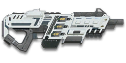

← Back to the CB-200 comparison
Sage Guide · Nanite Systems Operatives · Light Assault / Engineer
A 1,000-cert carbine for NSO Light Assaults and Engineers — the longer-ranged, harder-hitting sibling of the free CB-100. This page teaches you to win fights with it today.
The one-line verdict: a precise, hard-hitting carbine built for mid-range duels: 167 damage per bullet, an aimed cone of fire that starts at just 0.03°, and full damage out to 15 metres. It rewards short bursts and good positioning, and punishes the 2× first-shot kick and a 25-round magazine if you spray. Fight between 10 and 50 metres and it will carry you.

The CB-200 · Nanite Systems Operatives · 25-round magazine
Picture the scene, because you've probably lived it: you're sprinting across a courtyard, an enemy appears, and you do everything at once — hold the trigger down while you're still running, then press aim-down-sights (ADS) a split-second later, finger still down. The sight picture snaps in, it looks precise… and your bullets spray everywhere except the man in your crosshair. He kills you. It feels like the game cheated. It didn't — here's what actually happened.
You started firing from a sprint, from the hip. Sprinting is the least accurate state in the game: your cone of fire starts at 7.0° — fully bloomed, the widest it can ever be. Every shot you fire from the hip widens it further still (+0.12° per shot).
Then you pressed ADS mid-hold — and nothing reset. Aiming down sights does not shrink a cone of fire that is already bloomed. The scope only gives you a precise picture; the bullets keep flying out of the wide cone you built while running and hipfiring. That's the whole mystery: accurate-looking aim, wildly inaccurate gun.
Two timers stack the deck further: your gun needs about 0.3 s to settle after a sprint, and raising the sight itself takes ~0.15 s. Trigger held through all of it means your first half-second of fire is pure confetti.
1 · Feet. Let go of sprint (and the trigger, if you're already holding it). Stop, or drop into a strafe — anything but a full sprint.
2 · Sight. Press ADS and let the sight come up. This takes a heartbeat — that's fine, a half-second of patience is cheaper than a magazine of misses.
3 · Trigger. Now fire. Starting from the aimed cone of 0.03°, your first shots land where the dot points, and you control the bloom from zero instead of inheriting a maxed-out cone.
Stop → aim → fire. If you take one habit from this entire page, take this one. You'll practise exactly this rhythm in the simulator in section 04.
Four beats, left to right — the same mistake the cards above describe, drawn out.
1 · SprintingYour cone starts maxed at 7.0° — the widest it can ever be.
2 · Trigger heldFiring from the hip while running — every shot adds bloom.
3 · ADS, mid-holdThe sight looks precise — but aiming down sights does not reset bloom.
4 · The sprayBullets fly out of the wide cone you built. The enemy walks away.
Same fight, done right. Each beat has a job, and the order is the whole lesson.
1 · StopLet go of sprint (and the trigger). About 0.3 s for the gun to settle.
2 · AimPress ADS and let the sight come up (~0.15 s).
3 · FireNow fire — from the aimed cone. First shots land where the dot points.
The exception — under ~8 m, skip the whole danceHipfire works, no ADS needed, and stopping is optional. Keep moving, strafe, and let the hipfire ring do the work.
Every enemy infantry has 1,000 health (500 shield + 500 health). Your bullet does 167 damage up close, fading to 125 at long range. Headshots count double, leg shots count less (×0.9). That gives you three numbers worth memorising: one comparison worth making — the free CB-100 fires faster (714 RPM) but hits lighter (143 damage, 112 at range), so the 1,000 certs you paid here bought the heavier bullet and the longer reach, not a faster gun.
| Range | Damage | Head | Chest | Legs | Chest vs shielded Heavy |
|---|---|---|---|---|---|
| Close · 0–15 m | 167 | 3 | 6 | 7 | 9 |
| Mid · 15–80 m | 167→125 | 3 → 4 | 6 → 8 | 7 → 9 | 9 → 12 |
| Far · 80 m+ | 125 | 4 | 8 | 9 | 12 |
Perfect-accuracy times to kill: 3 headshots ≈ 0.21 s, 6 chest shots ≈ 0.52 s up close. At 577 RPM, full-damage output is 1,606 damage per second. In real fights you'll land maybe half your rounds — still, this is why the head matters so much on this gun. Note the mid band: you need 6 chest shots only to ~15.5 m, 7 from there to ~52 m, and 8 beyond it — the switch to 8 shots happens just past 50 metres. Magazine: 25 rounds, with 200 in reserve.
Full power to 15 m, then a steady slide to minimum at 80 m. The gold line shows Soft Point Ammunition, which stretches full power to 20 m.
One gun, four fighting styles. The right technique changes with distance — use the range finder below to see what your bullets do at any range, then learn the four bands underneath it.
How to fight hereAim down sights at the upper chest and neck. Fire in bursts of 5 — your recoil climbs straight up into the head for free damage.
Aim: centre of the chest, from the hip. Keep moving.
Scoping in costs you time and halves your move speed — at arm's length that gets you killed. The CB-200 has tight hipfire for a carbine (1.5° standing, 2.0° moving), so the ring stays inside a torso this close. Strafe side to side (A/D) while firing so you're hard to track. As a Light Assault, your jump jets are the other half of this range: land on top of people, not in front of them.
Aim: neck / upper chest. Bursts of 5 rounds.
This is where the gun earns its keep: full 167 damage to 15 m, a straight-up climb, and a 6-shot kill to ~15.5 m. Start your crosshair at the neck — the climb walks your shots into the head, and 3 head hits end the fight in about a fifth of a second. Strafe while scoped; you're slower, but a moving target still beats a still one.
Aim: chest. Bursts of 5 rounds, pause between them.
Damage is sliding from 167 toward 125 and your cone of fire blooms 0.06° per shot if you hold the trigger. Fire a burst, release for a split second to let accuracy reset, fire again. The recoil climbs straight up (angle ±5°, no sideways bias), so pull your mouse gently down — one direction only. Crouch or stand still when you can — both tighten your shots.
Aim: chest. Taps of 3–5 rounds at exposed targets only.
At 125 damage you need 8 chest hits — a long, loud advertisement of your position. Take these shots at stationary or fleeing targets, medics reviving, and engineers on turrets. Otherwise, your better play is to close the distance behind cover. Knowing when not to shoot is a skill too.
Your accuracy is decided by two things before skill even enters it: what your body is doing (your stance sets the starting cone of fire) and what your finger is doing (holding the trigger grows that cone with every shot). The CB-200 has no fire-mode switch — full-auto only — so "firing modes" are something you do with your finger, not a setting on the gun.
| Stance | Starting cone | What it means for you |
|---|---|---|
| Sprinting | 7.0° | Maxed out — the widest the cone can be. This is the section 01 disaster: never start firing from a sprint. |
| Hipfire, moving | 2.0° | Walking or strafing from the hip. Tight enough to hit torsos out to ~15 m — see section 05. |
| Hipfire, standing | 1.5° | Your point-blank default. The 0.21 m ring at 8 m in section 05 is this stance drawn out. |
| Hipfire, crouched | 1.25° | The tightest hipfire you have (1.5° if you crouch-walk). Crouch when holding a doorway from the hip. |
| Aimed (ADS), feet planted | 0.03° | Standing or crouched makes no difference here — fifty times tighter than hipfire. This is why section 01's order matters. |
| Aimed (ADS), strafing | 0.30° | Ten times the planted cone, and you move at half speed (0.5×). Strafe between bursts to stay hard to hit; plant your feet during each burst. (Crouch-walking while aimed is 0.15°.) |
The ADAD window: strafing while aimed starts your cone at 0.30° instead of 0.03°. Standing still, each aimed shot adds 0.06° of bloom — so you get 4 shots from still before your cone grows past the strafing floor. From the hip the same window is 4 shots (1.5° still, 2.0° strafing, 0.12° of bloom per shot). Plant your feet for the burst, strafe between bursts, and every burst starts at 0.03° again.
| Mode | How your finger does it | Use it at |
|---|---|---|
| The mag dump | Hold the trigger and don't let go | Point blank only, or suppressing a doorway. Bloom maxes out fast — past ~8 rounds you're spraying, not aiming, and a 25-round magazine is empty in 2.6 seconds. |
| Bursts — the default | Hold for 5 rounds, release ~0.15 s, hold again. 6–8 rounds is fine while you're learning | Almost everything, 8–50 m. Each release resets the cone, so every burst starts at 0.03°. |
| Tap-fire | Short taps of 3–5, or single clicks, with a real pause between | 50 m and out, at exposed or stationary targets. Slow, but every round goes where the dot is. |
A target 30 m away, aiming down sights. Press and hold FIRE (mouse, touch, or hold Space with the button focused) and watch the holes walk wider the longer you hold — that's firing from an ever-growing cone. Release, let the cone reset, fire again. Aim for bursts of 5; 6–8 is tolerable while you're new. This practice window is shared by the whole Sage series: it's driven by a weapon profile plugged into the window — here the CB-200's (577 RPM, 0.03° starting cone, 0.06° bloom per shot, target at 30 m) — and the spread is drawn at true scale from those numbers.
Cone of fire — fills as you hold, empties when you release.
Your bursts will be graded here — green at 5 rounds, tolerable up to 8.
Some things are easier to show than to say. Here's what your bullets actually do: how wide hipfire spreads at 8 metres, what a good burst rhythm looks like, and what the 2x sight really changes. The hands-on version — holding the trigger yourself — is the practice window in section 04.
A full-size target 8 m away — an arm's-length room fight. The rings show where hipfire rounds land around your aim point (the chest). Sizes are drawn to scale from the gun's real cone-of-fire numbers.
Read it this way: standing still, the 0.21 m ring sits well inside the chest — most rounds hit a target this size, which is why hipfire works point-blank. Move and it grows to 0.28 m — still inside the torso at 8 m — so the edge rounds stay on him. But the rings grow with distance while the man doesn't: at 20 m the moving ring is 0.70 m wide, wider than the torso — that's the moment to switch to aiming down sights, where the spread shrinks to a dot. (Ring sizes use the real geometry: spread diameter = 2 × distance × tan(cone ÷ 2).)
Every shot widens your cone of fire ("bloom"). Releasing the trigger for a heartbeat resets it. Same 18 rounds, two very different outcomes:
The target pattern is bursts of about 5 rounds — that's the ideal. Bursts of 6–8 are fine while you're new (call it newbie tolerance). Past that, the bloom (0.06° per shot aimed, 0.12° from the hip) keeps growing with every shot, so the extra bullets mostly decorate the wall behind your enemy instead of hitting him. Short bursts also leave you rounds for the second enemy — with 25 rounds, a full magazine is about three careful kills, not one long spray. Remember the trap, though: a small magazine tempts you to reload at the worst moment — burst discipline is what keeps rounds in the gun.
No zoom. The target at 35 m is small but the view is wide open — you see the crate, the tower, and the next enemy coming. Fast to aim, nothing blocks your edges. Best inside ~40 m.
Same target, same 35 m — but he looks twice as tall, so placing shots on his chest and head gets much easier. The price: your view narrows to the round window, the crate and tower are gone, and close targets feel fast and huge. Best at 25–50 m.
That's the whole 30-cert decision from section 06 in one picture: 1x for awareness, 2x for precision. Most veterans carry both and swap per base — indoors 1x, open ground 2x.
Honest news first: the CB-200 arrives bare — iron sights, no rail, no barrel, standard ammo. Nothing here is free except the iron sights, so buy in the order shown and stop whenever the gun feels right. Everything below is an optional sidegrade, not an upgrade. One warning up front: the Extended Magazine costs 200 certs on this gun, not 100 — the NSO price list is steeper than the old factions'.
The default post-and-notch sights. Usable, but a blue-dot reflex is a real upgrade on a gun you'll aim as much as this one.
Good: nothing costs nothing — they work at every range until you buy a sight.
Bad: precision past 25 m — the thick front post covers a head-sized target at range. That's what the ABLE sights fix.
A clean blue-dot reflex sight with no zoom. Your best all-round option once you own it.
Good: everywhere indoors and out to ~40 m — which is most PlanetSide fights.
Bad: picking out targets past 50 m; that's what the 2x is for.
Doubles your view magnification. Costs almost nothing — the price of a few kills.
Good: open-field bases, tower fights, and your 25–50 m burst game. Swap between 1x and 2x per fight.
Bad: tight indoor rooms — the zoom makes close targets feel fast and huge.
A low-range thermal optic: enemies glow against the dark, and it sees through smoke.
Good: night fights, smoky doorways, spotting infiltrators by their outline.
Bad: daytime and long range — its view is short-ranged and washes out in bright light.
More zoom than a reflex, with a blue-dot reticle for mid-range engagements.
Good: almost nothing a beginner does — recoil magnifies too, and tunnels your vision.
Bad: any fight inside 30 m, which is where you'll spend your first hundred hours.
The CB-200's recoil is already moderate and straight up. Plenty of veterans run this slot empty forever.
Good: your first weeks. Spend certs on your suit and ability first.
Bad: nothing — there's no downside to an empty slot.
Cuts vertical recoil by 30% (0.275° → 0.19°). Costs you: hipfire spread grows 15%, and enemies see you on the minimap from 35 m farther away when you fire.
Good: if you mostly aim down sights at mid-range and the climb bothers you — and on this gun the climb starts with a 2× first-shot jump.
Bad: hipfire builds and sneaky play — you get louder on the map and sloppier from the hip.
Cuts vertical recoil by 30% (0.275° → 0.19° per shot) — the same job as the Compensator, so buy one or the other, never both.
Good: the same 25–50 m aimed fights as the Compensator.
Bad: the same close hipfire fights — and never together with the Compensator, which does the same thing.
Your shots bloom 20% slower while aiming (0.06° → 0.048° per shot) — longer accurate bursts. But you move 20% slower while scoped (0.5× → 0.4×).
Good: holding a lane or doorway at 25–50 m, firing from a steady position.
Bad: aggressive room-clearing — the slower scoped strafe makes you an easier target.
Hipfire bloom grows 40% slower (0.12° → 0.072° per shot) — much steadier hip spraying. But vertical recoil rises 20% when you do aim (0.275° → 0.33°).
Good: a dedicated close-quarters build paired with the Laser Sight.
Bad: general play — it taxes the aimed shooting you'll do most.
You vanish from the minimap when firing and your shots are quiet. In exchange, damage starts dropping off from the muzzle — your 15 m of full damage is gone — and bullets fly 15% slower (525 → 446 m/s), harder to lead moving targets.
Good: flanking behind enemy lines, rooftop and tree work, solo play behind the front.
Bad: front-line fighting where everyone already knows where you are — you pay the damage cost for stealth you don't need.
Hides your muzzle flash so your own view stays clear at night — but you appear on enemy minimaps from 15 m farther away.
Good: night fights where your own flash blinds you. A comfort pick, nothing more.
Bad: as an early purchase — it changes no fight outcome. Buy it last, if ever.
The CB-200 ships with an empty rail. Plenty of veterans run it empty until they pick a playstyle.
Good: your first weeks. Spend certs on your suit and ability first.
Bad: nothing — there's no downside to an empty slot.
Cuts side-to-side recoil by 25% (horizontal tolerance 0.44° → 0.33°), keeping your bursts on a single target. Tiny cost: weapon equip is 0.15 s slower (0.55 s → 0.70 s).
Good: the default for aimed, mid-range play — leave it on until you deliberately build for hipfire or an underbarrel.
Bad: nothing meaningful. It only stops helping if you never aim down sights.
Hipfire accuracy improves by a third (33% tighter cone: 1.5° → 1.0° standing). Replaces the Forward Grip — you can't have both.
Good: indoor point-holds and stairwell fights where you hipfire inside 8 m.
Bad: open bases — you give up aimed recoil control for a bonus you rarely use.
The first shot of each burst kicks 60% less (0.55° → 0.22°) — but side-to-side recoil rises 10% on everything (0.22° → 0.24°).
Good: disciplined burst and tap-fire at 40 m+, where every burst starts fresh — and this gun's 2× first-shot kick is exactly what it tames.
Bad: beginners' longer bursts — past 5 rounds the sideways penalty is doing more harm than the first-shot saving.
Adds 5 rounds to the magazine (25 → 30) — and the weapon takes 15% longer to equip and unequip (0.55 s → 0.63 s).
Good: holding a lane or a point room: 30 rounds is a kill and a half more per magazine, and your 1.85 s reloads get rarer.
Bad: room-clearing, where the slower swap gets you killed — and it takes the rail slot, so no Forward Grip, Laser Sight or underbarrel alongside it. At 200 certs it's also the priciest attachment here — buy it after the grip and the ammo.
A single-shot underbarrel grenade launcher — lob an explosive round that arms after 10 m and bursts on contact. Toggle with the Gear Slot 1 key.
Good: clearing a doorway, a turret nest, or soft targets bunched behind cover before you push in.
Bad: a straight duel — the grenade is slow, loud, and one shot; your rifle does the killing.
An underbarrel launcher that fires a smoke canister, blanketing a doorway or a revive in grey. Toggle with the Gear Slot 1 key.
Good: covering a push or a revive when the enemy has the sightlines.
Bad: everyday play — it blinds your side too, and it takes the rail slot.
A single-shot shotgun round under the barrel — a panic button for point blank. Toggle with the Gear Slot 1 key; adds 0.25 s to your equip time.
Good: the last metre of a doorway fight, when your magazine is dry and there's no time to reload.
Bad: as a plan — one shell, then you're back to the rifle anyway.
A torch whose beam reveals cloaked infiltrators. Toggle it with the attachment key (X by default).
Good: hunting a stalker infiltrator camping your capture point — sweep corners with it.
Bad: as your everyday rail — it gives zero accuracy help, and the beam advertises your position.
Full 167 damage now reaches to 20 m instead of 15 m (the gold line on the chart above). Cost: bullets fly 10% slower (525 → 473 m/s).
Good: nearly always — most duels happen at 15–25 m, exactly where this extends your 6-shot kill.
Bad: long-range duels against runners, where the slower bullet needs more lead. A small price.
Bullets fly 10% faster (525 → 578 m/s) and minimum damage now holds to 100 m instead of 80 m — but full damage ends at 13 m instead of 15 m.
Good: lane-holding at 50 m+, where the faster bullet and longer reach matter more than two metres of full damage.
Bad: close fights — you give up full-damage range for speed you don't need under 25 m.
1,000 certs · The gun itself
What 1,000 certs buys you before a single attachment. Genuinely usable — learn the gun on this before spending anything.
230 certs in attachments · Recommended
The best value in this whole guide. Covers every fight from a doorway to a tower courtyard.
330 certs in attachments · Indoor brawler
Built to hipfire down stairwells and hold a capture point room. Swap back to the All-Rounder outdoors.
430 certs in attachments · Marksman
30 rounds, slow bloom, fast bullets — park on a lane and hold it. Weak in a fair room fight, so don't take fair room fights: fight from cover, at range.
Your gun is at its best between 10 and 50 m — and your class is how you get there. As a Light Assault, your jump jets put you on rooftops and behind enemies; as an Engineer, use cover and your turret's sightlines. Sprint between cover, use buildings and rocks as stepping stones, and open fire only once you're inside your range. The player who chooses the range usually wins the duel — make it you.
Headshots deal double damage: 3 kills up close versus 6 to the chest. Don't aim at the head directly — aim at the neck and let the gun's straight-up climb carry shots two and three into the skull. It's the single biggest damage upgrade you own, and it's free.
Every shot widens your cone of fire. Holding the trigger past ~8 rounds at range means later bullets fly around your target, not into it. Five rounds is the ideal burst; release the trigger for a heartbeat between bursts — your accuracy resets and your hits per magazine roughly double. And respect the 25-round magazine: it holds about three careful kills, and a long spray empties it in 2.6 seconds.
Reloading with even 1 bullet left takes 1.85 s; an empty gun takes 2.5 s — an eternity mid-fight. Count roughly: after one or two kills or ~20 rounds, duck behind cover and reload early. Treat the last 5 rounds as your emergency reserve, not your working magazine.
Walk with your crosshair at head height, pointed where an enemy's head will appear — a doorway edge, a corner, stairs. Most beginners lose fights in the half-second spent dragging the crosshair onto target. While firing, tap A/D to strafe between bursts: a moving target is dramatically harder to headshot back, and planting your feet during each burst keeps your cone at 0.03°.
Inside ~8 m your hipfire ring is 0.21 m wide — well inside a torso — and scoping in only costs you time and half your move speed. Past ~15 m the ring outgrows the torso and aiming down sights takes over. Knowing which side of that line you're on is the whole decision: hipfire in the room, ADS in the courtyard.
Every gun has a price. Here's where the CB-200 pays — and the habit that covers each hole.
25 rounds is four perfect kills, one or two in a real fight — and at 6–8 shots per kill, a single bad burst is a quarter of your magazine gone. A second enemy rounding the corner while you're reloading is the most common way this gun gets you killed.
Play around it: burst discipline (habit 3) and early reloads (habit 4) — and the Extended Magazine buys you 5 more rounds when you're ready to spend 200 certs on it.
The first round of every burst jumps with a 2× multiplier — 0.55° of climb before the burst even starts. Yank the trigger and your opening shot climbs off the head before the burst even starts.
Play around it: start each burst a touch low and let the climb walk into the target, or fit the Angled Forward Grip — it cuts that first-shot kick by 60%.
Your 6-shot kill lasts only to ~15.5 m; from ~52 m you're spending 8 chest shots, and a shielded Heavy at range takes 12. Snipers and battle rifles own that ground.
Play around it: Soft Point Ammunition stretches full damage to 20 m, and tap-fire at exposed targets only — otherwise close the distance. That said, the falloff is gentle: 125 damage is still a real bullet, and a 0.03° aimed cone means your rounds go where you point them. Tap-fire and make them count.
At 577 RPM each round takes 104 ms to leave the barrel, and your aimed cone grows 0.06° with every shot (0.12° from the hip) — hold the trigger for 10 aimed rounds and your cone is 0.63° wide, twenty-one times where it started. A mag dump is 2.6 seconds of noise.
Play around it: bursts of 5 (habit 3) — and remember the magazine only holds 25 rounds, so a spray leaves you dry in front of the second enemy.
Like all carbines, you move at half speed while aiming down sights (0.5×), and the gun takes 0.55 s to swap to — slow if a fight surprises you with your tool out.
Play around it: hipfire inside 8 m instead of scoping (that's the Point Hold build's whole idea), and swap weapons behind cover, never in the open.
Open the world map, travel to VR Training, and run these on the target dummies. Five minutes before a play session beats an hour of dying confused.
Aim at a wall 20 m away and empty a full magazine without touching the mouse. Watch the bullet pattern climb straight up — that's your gun's fingerprint, and the first shot jumps hardest (2×). Repeat, this time pulling straight down, until the group stays fist-sized.
Walk the dummy range keeping your crosshair glued to neck height the whole time, snapping to each new target without dipping to the floor or sky. Slow and clean first; speed comes on its own.
At 30–40 m, kill dummies with bursts of 5, releasing the trigger fully between bursts. If a burst goes wide, shorten it. Goal: whole kills without a single wild round — your cone starts at 0.03°, but 0.06° of bloom per shot adds up fast.
Pick a dummy, stand 5 m away, and circle it with A/D while hipfiring it down without stopping. This is your point-blank survival skill — the one that fires while your movement does the defending.
Fire exactly 20 rounds, step behind a pillar, reload, repeat. Train your hands to reload early and only in cover until it's automatic — with a 1.85 s reload, in real fights you'll do it without thinking, which is the point.